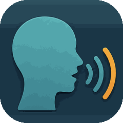

TalkMonitor
A warm tap. A quiet word in your ear.
TalkMonitor sits with you — at the dinner table, on a call, in a meeting, or rehearsing — and helps you stay aware of how you sound. When your voice climbs past your usual level, you feel a gentle haptic tap. No account. No ads. Processing happens on your iPhone whenever your language supports on-device speech; when it doesn't, Apple's speech service may handle recognition — and the app tells you on screen.
What it does
- Quiet nudges — gentle haptics when your volume drifts above your usual or crosses your line. Pace is tracked as a stat (and feeds heated-moment sensing); pick a pace goal and sustained fast talk gets its own gentle nudge.
- Heated-moment care — when a conversation heats up (level, pace, and tone trending together, read on-device), a small card offers a grounding line, soft things to say, and a graceful way to pause; with Settle mode on, a calming breath-paced pulse starts early too.
- Soft lines in your ear — optionally, advice is spoken calmly through headphones or another personal listening device. Never the phone's built-in speaker.
- Intentions — pick one card before a conversation ("Understand first", "Start gently"…) and the in-the-moment advice leads with it.
- Session reflections — after you stop, a short readable summary built from on-device stats.
TalkMonitor is for everyday self-awareness and isn't a medical device.
About MSK Software
TalkMonitor is an independent app developed by MSK Software, a one-person studio based in Manitoba, Canada.
For questions, support requests, or any concerns, email msksoftware@yahoo.ca.